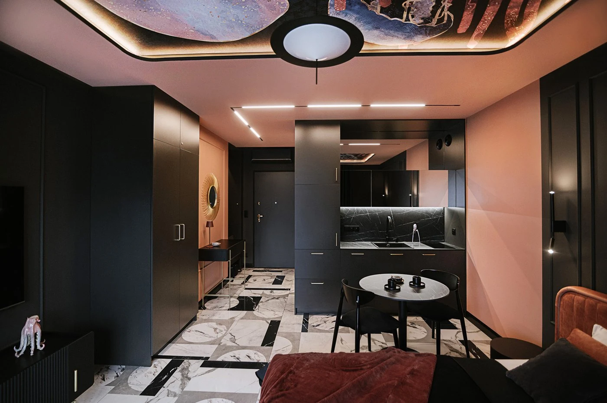
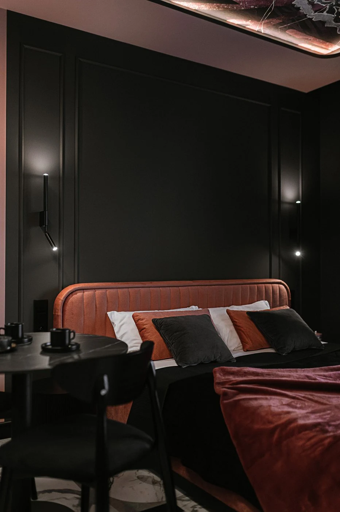
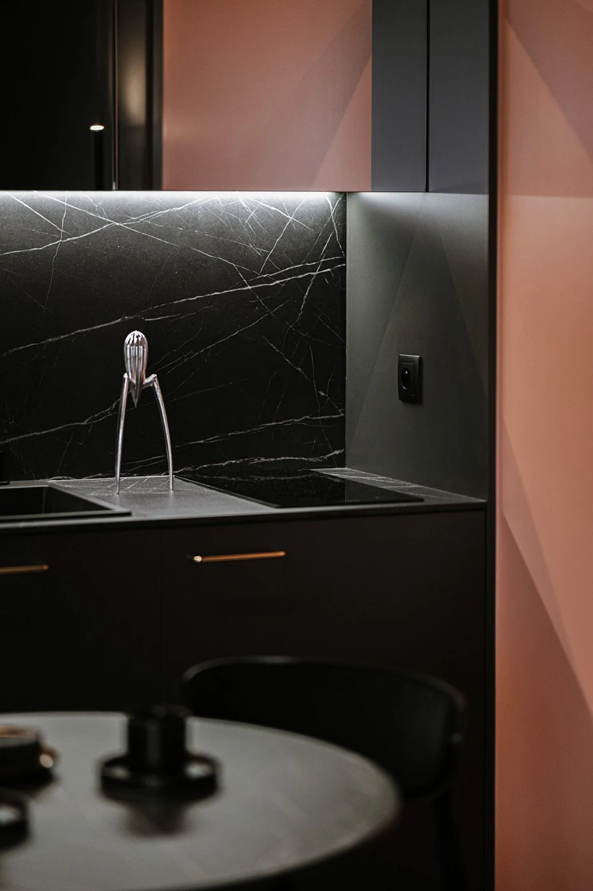
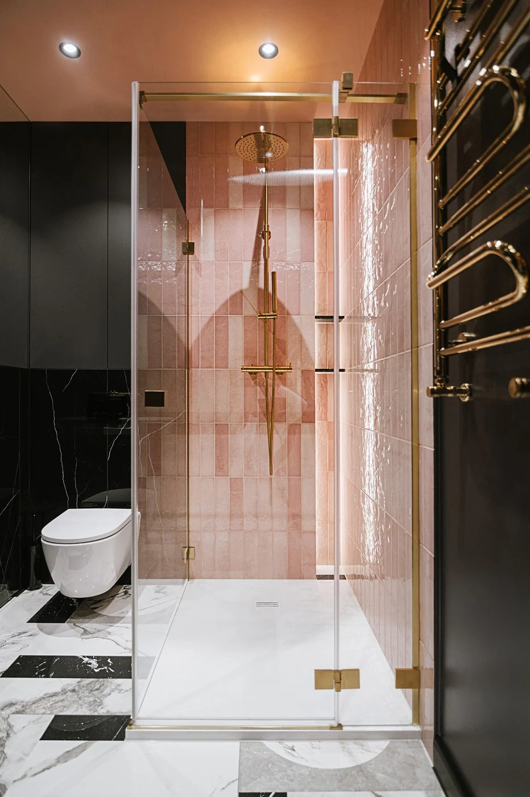

Kto kupuje takie mieszkania i po co
Najczęściej są to cele inwestycyjne: mieszkanie ma być wynajmowane i na tym zarabiać. Wtedy właściciel zwykle nie chce mieć z nim nic wspólnego na co dzień. Ma być łatwe w utrzymaniu, w czystości i trudne do zepsucia, a materiały bardzo odporne.
Zdarzają się też osoby, które kupują mieszkanie w innym mieście, bo przyjeżdżają do dzieci i nie chcą mieszkać w hotelu. Potrzebują miejsca, w którym zatrzymają się na kilka dni i będą się czuły jak u siebie.
Czym taki projekt różni się od projektu dla rodziny
Podejście do wnętrza jest zupełnie inne. W mieszkaniu na krótki wynajem nie potrzebujemy dużo miejsca na przechowywanie. Chodzi o to, żeby gość mógł wejść do łazienki i odłożyć kosmetyczkę, rozpakować się, postawić walizkę. Nie upychamy dziesięciu rolek papieru toaletowego i piętnastu ręczników. Liczy się to, co jest tu i teraz, i żeby było wygodnie.
Układ i funkcje: co przemyśleć najpierw
Takie mieszkanie robi się zwykle dla jednej, maksymalnie dwóch osób. Dlatego:
Liczba miejsc do spania i miejsce na walizkę to pierwsze, co planujemy.
Kuchnia nie musi być pełnowymiarowa. Często wystarczy wersja mikro: płyta z dwoma palnikami i niewielka lodówka podblatowa. Nikt tu nie gotuje obiadu dla dziesięciu osób.
Łazienka musi mieć miejsce, gdzie można odłożyć kosmetyczkę.
Miejsce do pracy przy laptopie. Zwykle ktoś będzie go potrzebował, więc warto je wygospodarować. Wielki stół nie jest potrzebny.
Materiały i wykończenia: żadnych tanich i nieodpornych
Tu nie ma miejsca na tanie materiały. Trzeba myśleć o dużej rotacji gości, którzy nie zawsze będą dbać o wszystko tak jak właściciel. Wszystko musi być łatwe w utrzymaniu czystości:
Podłogi odporne na intensywne użytkowanie, w przedpokoju najlepiej płytki (a czasem nawet na całości mieszkania, zależnie od aranżacji).
Blaty z kamienia lub konglomeratu, a nie z materiałów, o które trzeba specjalnie dbać.
Fronty: unikałybyśmy delikatnych, lakierowanych, nieodpornych na uderzenia i uszkodzenia.
Tkaniny najlepiej zmywalne.
Ściany: zmywalne tapety, zwłaszcza w przejściach, np. winylowe. Dobrze sprawdzają się też odporne płyty meblowe.
Meble i wyposażenie: w co warto zainwestować
Kuchnię robimy na wymiar, często też niewielką szafę. W takiej szafie nie przechowuje się setek ubrań, ale trzeba przewidzieć miejsce na pionowy odkurzacz i deskę do prasowania. Gość wynajmujący mieszkanie będzie takich rzeczy szukał.
Warto zainwestować w to, co trudno wymienić i co naprawdę się zużywa: blat, podłogę, baterie w łazience i kabinę prysznicową. Uszczelki w kabinie, które zaczną przeciekać, to prosta droga do zalania i grzyba. Z meblami ruchomymi nie trzeba przesadzać, bo są łatwiejsze do wymiany.
Przydatne rozwiązanie, które lubimy: wnęka pod łóżkiem, w której łatwo schować walizkę lub duże torby, żeby nie zawadzały.
Światło, technika i rozwiązania, które ułatwiają życie
Osobne światła na różne nastroje. Zdecydowanie tak.
Klimatyzacja jest bardzo ważna.
Rolety i zasłony, które pozwalają przyciemnić całe pomieszczenie, bo nigdy nie wiadomo, czy ktoś nie będzie chciał spać w ciągu dnia.
Niewielka pralka. Suszarka nie jest konieczna, może być wolnostojąca. W łazience dobrze mieć kilka drobnych gadżetów, np. suszarkę do włosów.
Zamków na kod nie planujemy. Dodatkowe wyciszanie dźwięków zwykle nie jest potrzebne.
Jak połączyć ładny wygląd z praktycznością
To zależy od inwestora. Mieszkanie może się wyróżniać, ale wtedy nie spodoba się wszystkim. Może też być elegancko i ponadczasowo, tak żeby podobało się większości, choć będzie mniej zapadać w pamięć. Część osób szuka krótkiego najmu właśnie w takich wnętrzach, które można fajnie sfotografować i wstawić na Instagram. To też przyciąga gości.
Najczęstszy błąd inwestorów
Patrzenie na własny gust. W mieszkaniu pod wynajem nie on jest najważniejszy. Warto zaufać architektowi, który ma w tym doświadczenie i wie, czego najczęściej szukają goście.
Jak wygląda nasza współpraca
Możemy zrobić zupełnie wszystko. Obsługiwałyśmy już klientów, którzy mieszkali w innym mieście, a nawet w innym kraju. Mieli tu wszystko zorganizowane: od ekipy, przez koordynację zakupów i dostaw, po montaż i cały remont.
Przykład z naszej pracy: mieszkanie, które ma zapadać w pamięć
To mieszkanie z sesji Agaty Piątkowskiej, zaprojektowane dla inwestorki o wyjątkowo artystycznej duszy: bardzo otwartej i odważnej. Mieszkanie miało być bardzo mocno teatralne. Nie miało się podobać wszystkim, miało zapadać w pamięć. Wydaje nam się, że ten efekt osiągnęłyśmy.






Masz mieszkanie pod wynajem albo planujesz je kupić? Napisz do nas, odpowiemy w ciągu 2 dni roboczych. Pierwsze spotkanie jest bezpłatne. Umów spotkanie.